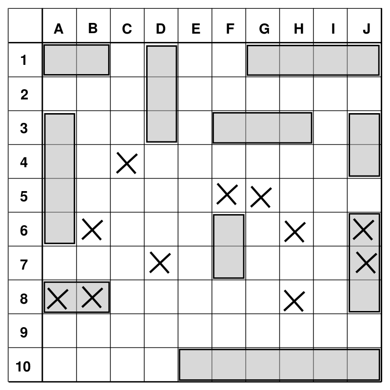

La bataille navale, appelée aussi touché-coulé, est un jeu de société dans lequel deux joueurs doivent placer des navires sur une grille tenue secrète et tenter de toucher les navires adverses. Le gagnant est celui qui parvient à couler (c'est-à-dire toucher toutes les cases) tous les navires de l'adversaire avant que tous les siens ne le soient.
Le principe du jeu de bataille navale semble trouver son origine dans le jeu français L'Attaque lors de la Première Guerre mondiale. On a aussi trouvé des liens de parenté avec le jeu de E. I. Horseman en 1890 (Baslinda) et on dit que des officiers russes y auraient joué antérieurement à la première guerre. La première version commerciale du jeu fut publiée en 1931 par la Starex Novelty Co. sous le nom de Salvo.
Ce jeu est devenu populaire lors de son apparition en 1943 dans les publications américaines de divertissement de la Milton Bradley Company qui l'exploita sous la forme papier jusqu'en 1967, où elle sortit un jeu de plateau, puis en réalisa une version électronique en 1977.
Plateau de jeu de l'ancêtre de la bataille navale : le Salvo